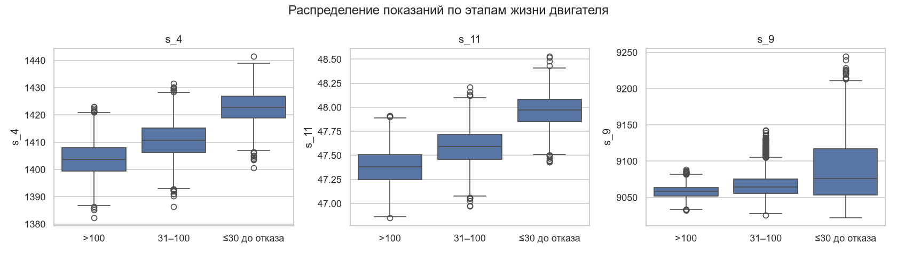
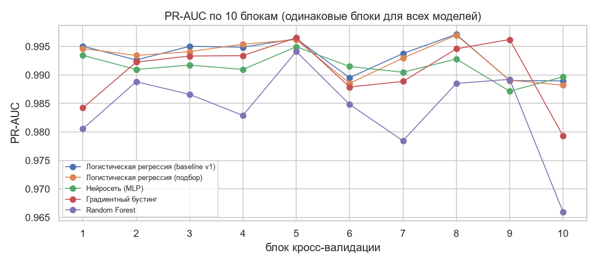
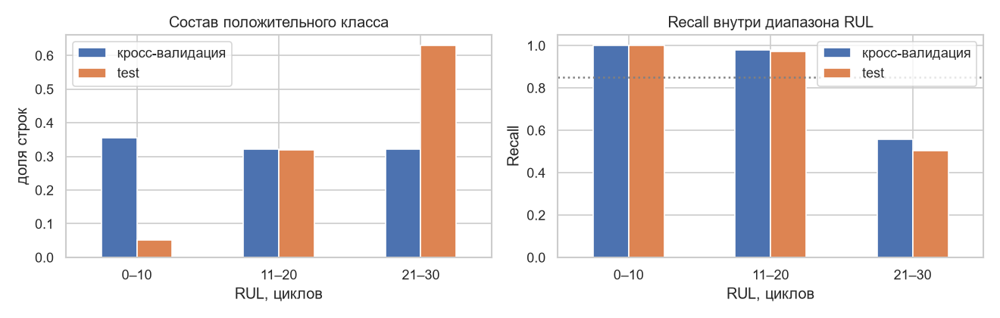

Бизнес-задача. Внеплановый отказ авиационного двигателя — это простой воздушного судна, срочный ремонт и риск для безопасности. Обслуживание строго по регламенту, наоборот, заставляет снимать исправные узлы раньше срока. Нужна система, которая по показаниям датчиков заранее предупреждает о приближении отказа, чтобы ремонт можно было спланировать: заказать запчасти, выделить окно в расписании, подготовить бригаду.
Актуальность. Предиктивное обслуживание — одна из самых массовых промышленных задач ИИ: датчики уже стоят на оборудовании, а стоимость пропущенного отказа на порядки выше стоимости лишнего осмотра. Ключевое требование — не пропустить отказ (высокий Recall) при умеренном числе ложных тревог.
Цель работы — построить законченную ML-систему: от требований и архитектуры данных до модели, работающей в режиме реального времени. Задачи: (1) формализовать требования и спланировать эксперименты; (2) загрузить данные в PostgreSQL и организовать слои raw → cleaned → enriched → features; (3) обучить baseline и три алгоритма с подбором гиперпараметров, выбрать и оценить финальную модель; (4) построить Feature Store (PostgreSQL + Redis) и потоковую обработку через Kafka; (5) развернуть сервис FastAPI в Docker Compose; (6) покрыть код тестами и автоматической проверкой (CI).
Постановка. Бинарная классификация: объект — состояние двигателя на цикле работы; target = 1, если до
отказа осталось 30 циклов или меньше. Допущение: горизонт «7 дней» из задания приравнен к 30 циклам
(≈ 4 полёта в сутки) — в датасете время измеряется циклами.
| Уровень | Метрика | Цель | Обоснование |
|---|---|---|---|
| Бизнес | Доля отказов, о которых предупредили заранее | ≥ 85% | Пропуск отказа — самая дорогая ошибка |
| Бизнес | Доля ложных тревог среди исправных состояний | < 15% | Каждая ложная тревога — лишний осмотр и простой |
| Бизнес | Запас времени от первой тревоги до отказа | медиана ≥ 15 циклов | Успеть заказать запчасти и спланировать ремонт |
| Бизнес | Стоимость ошибок (пропуск : ложная тревога = 10 : 1) | ниже, чем у регламента | Экономический смысл внедрения |
| ML | Recall / False Positive Rate | ≥ 0,85 / < 0,15 | Требования задания |
| ML | PR-AUC (основная), F2 (вспомогательная) | максимум | Устойчивы к дисбалансу классов; F2 ценит Recall выше Precision |
| Система | Время ответа сервиса, p95 | < 50 мс | Требование задания (работа в реальном времени) |
| Система | Пропускная способность потока | ≥ 100 сообщений/с | Целевое значение автора проекта |
Почему не accuracy и не порог 0,5. Положительный класс — лишь 15% строк, поэтому «всегда исправен» даёт accuracy 85%. Модели сравниваются по PR-AUC, не зависящей от порога, а порог подбирается отдельно под требование Recall ≥ 0,85.
| Категория | Требование |
|---|---|
| Производительность | Ответ API p95 < 50 мс; поток ≥ 100 сообщений/с |
| Надёжность | Сообщение из Kafka не теряется: смещение фиксируется только после записи в БД; повторная доставка не создаёт дублей |
| Воспроизводимость | Фиксированные версии библиотек и random_state=42; запуск всего проекта одной командой (Docker Compose) |
| Качество | Покрытие тестами > 60%; автоматическая проверка при каждой отправке кода (GitHub Actions) |
| Наблюдаемость | Журнал предсказаний, задержка каждого запроса, предупреждения о дрейфе входных данных |
Допущения: соотношение стоимости ошибок 10 : 1 — экспертная оценка; данные симуляционные (один режим работы, один тип отказа), переносимость на реальный парк не проверяется.
| Компонент | Реализация | Технологии |
|---|---|---|
| Источники данных | Файлы C-MAPSS; симулятор датчиков (Kafka producer, читает показания из PostgreSQL); web scraping справочных характеристик двигателей из Википедии | Python, kafka-python, httpx, BeautifulSoup |
| Хранилища | PostgreSQL — слои raw / cleaned / enriched / features, реестр признаков, журнал предсказаний (офлайн-хранилище); Redis — онлайн-хранилище признаков | PostgreSQL 17, Redis 7 |
| Обработка данных | ETL-пайплайн (7 шагов с проверками качества); Kafka consumer: запись в raw → прогноз → фиксация смещения | pandas, SQL (оконные функции, PL/pgSQL), Kafka 3.9 |
| Обучение и оценка | Кросс-валидация по двигателям, подбор гиперпараметров, бутстрап-ДИ, сохранение модели с метаданными | scikit-learn 1.9, joblib |
| Сервис | POST /predict, GET /engines/{id}/features, /health, /model; общий с Kafka сервис прогноза | FastAPI, Pydantic |
| Мониторинг | Журнал monitoring.predictions (вероятность, тревога, задержка, предупреждения); SQL-запросы: задержка и доля тревог по источникам, дрейф входных данных, Recall/FPR на известных исходах | PostgreSQL |
| Развёртывание и качество | Docker Compose: postgres, redis, kafka, etl, feature-sync, api, consumer (+ producer, tests, train); CI в GitHub Actions | Docker, GitHub Actions, pytest |
Два потока данных. Пакетный: файлы → ETL → слои PostgreSQL → обучение и оценка → модель в файле. Потоковый: показания приходят по одному циклу через API или Kafka; общий сервис прогноза берёт историю двигателя из Redis, считает признаки тем же кодом, что и при обучении, выдаёт прогноз и пишет его в журнал. Тесты проверяют, что признаки, посчитанные в SQL (обучение) и в Python (сервис), совпадают до 7-го знака, — расхождения между обучением и эксплуатацией нет.
C-MAPSS моделирует деградацию турбовентиляторного двигателя класса тяги ≈ 90 000 lbf. В поднаборе FD001 один режим работы и один тип отказа. Каждая строка — цикл работы двигателя: номер двигателя, номер цикла, 3 режимных параметра и 21 датчик (температуры, давления, частоты вращения, расходы).
| Часть | Строк | Двигателей | Особенность | Доля target = 1 |
|---|---|---|---|---|
| train | 20 631 | 100 | наблюдения до отказа; срок жизни 128–362 цикла, медиана 199 | 15,03% |
| test | 13 096 | 100 | наблюдения обрываются на 31–303 цикле; истинный RUL — в RUL_FD001.txt | 2,54% |
Данные загружены в PostgreSQL (raw.sensor_readings, raw.rul_test); повторная загрузка не создаёт дублей.
Остаточный ресурс (RUL) и целевая переменная — вычисляемые столбцы слоя enriched.
setting_3, s_1, s_5, s_6, s_10,
s_16, s_18, s_19).s_11 (−0,72), s_4 (−0,70),
s_12 (+0,69), s_7 (+0,68), s_15 (−0,67); режимные параметры не связаны (|ρ| < 0,01).
s_9 и s_14 почти дублируют друг друга (r = 0,96).

| Проблема | Решение |
|---|---|
| Строки одного двигателя зависимы | Разбиение и кросс-валидация только по двигателям (GroupKFold) — иначе утечка данных |
| Неинформативные столбцы | Удалены при очистке; список определяется только по train, чтобы test не влиял на обработку |
| Выбросы у отказа | Сохранены: удаление убрало бы главный сигнал |
| Одно показание мало говорит об износе | 71 признак по истории двигателя: для 14 датчиков значение, среднее и стандартное отклонение за 10 циклов, тренд за 20 циклов, отклонение от «нормы» первых 10 циклов. Окна только по прошлому — утечки из будущего нет (проверено тестом) |
| Дубли и испорченные сообщения в потоке | Правила очистки (ключ, нечисловые значения, дубли); отбраковка сообщений Kafka в raw.stream_rejects |
| Слой (схема) | Содержимое |
|---|---|
raw | Данные как есть из файлов и Kafka (с разделом и смещением сообщения, уникальный индекс против дублей); отбракованные сообщения |
cleaned | 33 727 строк после проверок, без 8 неинформативных столбцов |
enriched | + RUL, target, признак последнего цикла; справочные характеристики 7 двигателей (web scraping: ближе всего к C-MAPSS — Trent 800, +3% по тяге, и GE90, +8%) |
features | Офлайн-хранилище: 71 признак; реестр признаков с физическим смыслом датчиков; SQL-функции backfill_engine_features (заполнение истории) и get_engine_features (состояние на момент цикла) |
| Redis | Онлайн-хранилище: история двигателя (первые 10 и последние 20 циклов) и последний вектор признаков; материализация из PostgreSQL; атомарная проверка порядка циклов (WATCH/MULTI); Python API FeatureStore |
| Алгоритм | Зачем | Пространство поиска |
|---|---|---|
| Логистическая регрессия (основной) | Простой интерпретируемый baseline | C ∈ {0,001 … 100} (11 значений) × балансировка классов |
| Random Forest | Нелинейные зависимости, устойчивость к шуму | число деревьев, глубина, лист, доля признаков, балансировка (12 конфигураций) |
| Градиентный бустинг (HistGB) | Сильный алгоритм для табличных данных | шаг, итерации, листья, регуляризация, балансировка (20 конфигураций) |
| Нейросеть (MLP) | Принципиально иной класс моделей | архитектура слоёв, alpha, скорость обучения, размер пакета (10 конфигураций) |
| № | Гипотеза | Метод проверки | Критерий |
|---|---|---|---|
| H1 | Признаки по скользящему окну лучше исходных показаний | Одна модель на двух наборах признаков, 10 блоков, односторонний критерий Уилкоксона | p < 0,05 и прирост PR-AUC > 0 |
| H2 | Градиентный бустинг лучше логистической регрессии (v1) | Те же 10 блоков, критерий Уилкоксона | p < 0,05 и прирост > 0 |
| H3 | Финальная модель выполняет требования на отложенных двигателях | Бутстрап по тестовым двигателям, 1000 повторов, 95% ДИ | нижняя граница Recall ≥ 0,85 и верхняя граница FPR < 0,15 |
| H4 | Время ответа укладывается в требование | 1000 последовательных запросов к работающему сервису после прогрева | p95 < 50 мс |
План A/B-теста. Сравниваются baseline v1 и финальная модель v2. Источники данных: поток показаний из
топика Kafka sensor-readings; журнал monitoring.predictions (двигатель, цикл, версия модели,
вероятность, тревога, задержка); фактические исходы — журнал отказов и ремонтов (в проекте — тестовые двигатели с известным
RUL, которые симулятор проигрывает как поток). Этап 1 — теневой режим: обе модели оценивают все двигатели, решения
принимаются по v1, сравнение парное (критерий Мак-Немара). Этап 2 — разделение 50/50 по хешу номера двигателя (единица
рандомизации — двигатель, а не цикл). Основная метрика — доля отказов, предупреждённых заранее (z-критерий для долей,
при малых выборках — точный критерий Фишера); ограничивающие — FPR < 0,15 и p95 < 50 мс. Для обнаружения роста
Recall с 0,85 до 0,95 (α = 0,05, мощность 0,8) нужно ≈ 140 отказов в группе, поэтому в рамках проекта (100 тестовых
двигателей) этап 2 не выполним, а этап 1 продемонстрирован: поток через Kafka пишет прогнозы в журнал, по которому SQL-запрос
считает Recall и FPR на известных исходах.
На кросс-валидации: PR-AUC 0,992, при пороге 0,984 Recall 0,85 и FPR 0,001. На тесте Recall упал до 0,678 при FPR 0,0004. Анализ ошибок показал причину: внутри одинаковых диапазонов остаточного ресурса качество на тесте и на кросс-валидации одинаково (для RUL 21–30 Recall 0,56 и 0,50), но в тесте 63% положительных строк приходятся на трудный диапазон RUL 21–30 против 32% в train — наблюдения тестовых двигателей обрываются до отказа. Это не переобучение, а сдвиг состава выборки; отсюда решение о пороге «с запасом» для v2 (принято только по train).
| Модель (лучшие гиперпараметры) | PR-AUC, 10 блоков | Recall* | FPR* | F2* | p95, мс** |
|---|---|---|---|---|---|
| Логистическая регрессия, C = 1, балансировка (baseline v1) | 0,9932 ± 0,0031 | 0,874 | 0,0019 | 0,895 | 5,2 |
| Логистическая регрессия, подбор: C = 3, балансировка | 0,9929 ± 0,0032 | 0,875 | 0,0023 | 0,895 | 5,2 |
| Нейросеть MLP: слой 32, alpha = 10−4, шаг 10−3, пакет 128 | 0,9914 ± 0,0021 | 0,873 | 0,0024 | 0,894 | 3,7 |
| Градиентный бустинг: 200 итераций, шаг 0,05, 15 листьев, лист ≥ 100, балансировка | 0,9907 ± 0,0056 | 0,869 | 0,0026 | 0,889 | 17 |
| Random Forest: 200 деревьев, глубина 16, лист ≥ 5, 30% признаков | 0,9840 ± 0,0078 | 0,872 | 0,0058 | 0,889 | 129 |
* На предсказаниях кросс-валидации при пороге «с запасом» каждой модели. ** Время предсказания одной строки на нагруженном ноутбуке; между запусками колеблется (у логистической регрессии 1,9–5,8 мс, у Random Forest 41–129 мс).

Правило, заданное до получения результатов: наибольшее среднее PR-AUC на 10 блоках среди моделей, которые на кросс-валидации выполняют требования (нижняя граница ДИ Recall ≥ 0,85, FPR < 0,15) и укладываются во время предсказания. Выбрана логистическая регрессия с C = 1: лучшее качество, самая простая и интерпретируемая (коэффициенты показывают вклад каждого признака), быстрая. Версия v2 отличается от v1 порогом «с запасом»: 0,972 вместо 0,984 (нижняя граница ДИ Recall на кросс-валидации — 0,850).
| Метрика (test, 100 двигателей) | v1 | v2 (финальная) | Требование |
|---|---|---|---|
| Recall | 0,678 | 0,714 (95% ДИ 0,59–0,80) | ≥ 0,85 — не выполнено |
| False Positive Rate | 0,0004 | 0,001 (95% ДИ до 0,002) | < 0,15 — выполнено |
| Precision / F2 / PR-AUC / ROC-AUC | 0,978 / 0,722 / 0,940 / 0,998 | 0,948 / 0,751 / 0,940 / 0,998 | — |
| Пропуски (FN) / ложные тревоги (FP) | 107 / 5 | 95 / 13 | из 332 / 12 764 |
| Отказы, предупреждённые заранее | 19 из 25 | 21 из 25 (84%) | ≥ 85% — почти |
| Медианный запас до отказа | 27 циклов | 26 циклов | ≥ 15 — выполнено |
H3 не подтверждена: нижняя граница Recall (0,59) ниже 0,85; по FPR критерий выполнен с большим запасом.
Анализ ошибок. Recall по диапазонам RUL: 0–10 циклов — 1,00; 11–20 — 0,98; 21–30 — 0,56. Модель уверенно видит близкий
отказ, а за 21–30 циклов признаки износа ещё слабо выражены. Часть ложных тревог (4 из 13) — на циклах 2–5, когда тренд по
2–5 точкам неустойчив; API помечает такие прогнозы предупреждением short_history.
Требование достижимо снижением порога: справочно, при пороге 0,8 Recall на тесте был бы 0,86 при FPR 0,004. Но выбор порога по тесту — подгонка результата, поэтому в отчёте фиксируется честное невыполнение.

Бизнес-эффект. Сравнение со стратегией обслуживания по регламенту — тревога по достижении возраста (146-й цикл, выбран на train тем же правилом Recall ≥ 0,85):
| Стратегия (test) | Recall | FPR | Пропуски | Ложные тревоги | Стоимость ошибок (10 : 1) |
|---|---|---|---|---|---|
| Регламент: тревога с 146-го цикла | 0,714 | 0,097 | 95 | 1 240 | 2 190 |
| Модель v1 | 0,678 | 0,0004 | 107 | 5 | 1 075 |
| Модель v2 | 0,714 | 0,001 | 95 | 13 | 963 (−56%) |
При том же Recall модель даёт в 95 раз меньше ложных тревог, чем регламент, а условная стоимость ошибок ниже на 56%.
| Проверка | Результат |
|---|---|
| H4: время ответа API | Подтверждена. 1000 последовательных запросов к работающему сервису: p95 = 21,0 мс (сервер — 5,0 мс), 0 ошибок; в серии запусков p95 21–35 мс |
| Поток через Kafka | 467 сообщений/с (13 096 сообщений, 2 экземпляра consumer, запись в PostgreSQL + прогноз + Redis); LAG = 0; перезапуск consumer не создаёт дублей |
| Сквозная проверка потока | По 13 096 прогнозам, прошедшим Kafka → consumer → Redis → модель: Recall 0,7139, FPR 0,0010 — ровно как в офлайн-оценке. Эта проверка нашла и ошибку самой проверки (замер до записи последних прогнозов), и скрытую уязвимость consumer (потеря прогноза при сбое после обновления Redis) — обе исправлены |
| Выгрузка модели | models/final_v2.joblib + final_v2.json: порог, 71 признак, метрики, версии Python 3.12.10 и библиотек, MD5 исходных файлов; загрузка с проверкой признаков — src/models/predict.py; зависимости — requirements.txt |
| Тесты и CI | 147 тестов (131 unit, 16 интеграционных), покрытие 75%; GitHub Actions на каждую отправку: тесты на PostgreSQL 17 и Redis 7, сборка Docker-образа и проверка всего стека |
Достижения. Построена законченная система предиктивного обслуживания: требования и метрики, архитектура с пакетным и потоковым контурами, слои данных в PostgreSQL, Feature Store (PostgreSQL + Redis, SQL-функции истории, Python API, web scraping), четыре алгоритма с подбором гиперпараметров, финальная модель с выгрузкой, REST API, потоковая обработка Kafka с фиксацией смещения после записи в БД, Docker Compose и CI. Требования по FPR (0,001 при допустимых 0,15), времени ответа (21 мс при 50), скорости потока (467 при 100 сообщениях/с) и запасу времени до отказа (26 циклов при 15) выполнены; модель на 56% дешевле регламента по стоимости ошибок. Гипотезы H1 и H4 подтверждены, H2 и H3 — нет.
Главный вывод по модели: качество определили признаки по истории двигателя (PR-AUC 0,954 → 0,993), а не сложность алгоритма — простая логистическая регрессия не уступила бустингу, нейросети и Random Forest, а подбор гиперпараметров её не улучшил.
Ограничения. Recall на тесте 0,71 (95% ДИ 0,59–0,80) ниже требования 0,85 — H3 не подтверждена; слабое место — распознавание отказа за 21–30 циклов. Данные симуляционные (один режим работы, один тип отказа). Горизонт 30 циклов ≈ 7 дней и соотношение стоимости ошибок 10 : 1 — допущения. Гиперпараметры подбирались без вложенной кросс-валидации. A/B-тест выполнен как демонстрация теневого режима: для этапа 50/50 нужно ≈ 140 отказов в группе, а в тесте их 25.
Рекомендации. (1) Уточнять порог в теневом режиме на реальных данных (этап 1 A/B-теста) — запас по FPR позволяет снизить порог и выполнить требование по Recall. (2) Добавить признаки, чувствительные к ранней деградации (более длинные окна, скорость изменения тренда). (3) Проверить модель на поднаборах FD002–FD004 с несколькими режимами работы. (4) Для эксплуатации — алерты по SQL-запросам мониторинга (дрейф входных данных, доля тревог, Recall на подтверждённых отказах) и сигнал на переобучение.